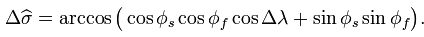

The big idea this week is writing your own procedures and functions. Here's the list of things you should do this week.
-
 Procedural Decomposition: DrawEggs:
In class you learned how to break a single
Procedural Decomposition: DrawEggs:
In class you learned how to break a single main()function into a series of procedures, eliminating redundancy. See if you can do that on your own by writing a complete Java console program named DrawEggs that prints the pattern shown on the right. (Click the image to see it full size.)Here are the requirements:
- You should use at least at least three procedures,
(not counting
main()). - Do not do any printing inside your
main()method. The only thing thatmain()should contain is procedure calls.
Make sure that you make each of the procedures that you write
public. Check your programs with Check. If you run into difficulty, look on the Solutions page. - You should use at least at least three procedures,
(not counting
-
String Functions: ProcessName:
This week you learned how to use two more
Stringfunctions. To try out your new expertise, write console program named ProcessName that asks the user to enter their name in the form (First MI. Last) and then prints the resulting name rearranged and labeled in the form "Last, First MI." (including the quotes as shown below).You can use the
Stringfunctionssubstring(),indexOf(),lastIndexOf(),charAt()andtrim()to solve this problem. You may assume:- that every name will have exactly one word for the first and last names and a single character, followed by a period for the middle initial.
- There will be at least one space separating each of the portions of the input name, but there may be more spaces.
 Use Check to double-check your work, and the discussion board along
with the solution page if you get stuck.
Use Check to double-check your work, and the discussion board along
with the solution page if you get stuck.
-
Writing Simple String Functions: StringFunctions:
This is the most important assignment this week.
If you don't do
anything else, you should try to complete these
Stringfunctions in StringFunctions.java. To get started, walk through the hands-on section at the end of the Writing Functions section of Chapter 5 in your online text. That will get you started with the first two exercises. Once you're finished, complete the remaining five problems in the file.As an alternative, you can work on these problems without using DrJava by working with the online homework site CodingBat.com. That's what the solution videos here use. This is a non-commercial Web site run by Nick Parlante, a CS professor at Stanford, and you can do all of your work from inside any Web browser. You don't need Java at all. (That means you can practice at the library, for instance.) Here's what the helloName problem (from the lecture looks like at CodingBat:
 As you can see, with CodingBat, you just type your code in the
text window and then click Go. Your code is saved, compiled and
checked on the Web and you're given instant feedback. You can
create an account, if you like (not required for class), so that
your solutions are saved everytime you visit the site.
As you can see, with CodingBat, you just type your code in the
text window and then click Go. Your code is saved, compiled and
checked on the Web and you're given instant feedback. You can
create an account, if you like (not required for class), so that
your solutions are saved everytime you visit the site.
If you do use CodingBat instead of DrJava and CheckResults, remember that you should not use the
staticmodifier on your functions. With DrJava and Check, you may (so your code will look like that shown in your text), but you don't need to. -
Style and Formatting: SayWhat:
The SayWhat program, which you'll find in this chapter's
code folder, is completely legal under Java's
syntax rules. Compile it and run the program to prove
to yourself that it contains no errors.
Now, look at the code itself. Pretty unreadable, huh? It doesn't come close to follwoing the style guidelines for writing well-formatted code. Reformat the code using the rules we discussed in the lecture and those found in the Style Rules section of this chapter.
Use the Style button to double-check your work.
-
Extra Credit #2 (Comprehensive): AirDistance:
If you find yourself asking each week, "Why doesn't Professor
Gilbert give us more difficult problems?", then your time
has come. The AirDistance program calculates the
number of air miles between two airports. (This is a difficult,
advanced problem for those who have a lot of extra time and
who want to stretch themselves.) Here's what
the program looks like when it runs (Click to see full size) :

The input for each line of input is formatted as shown in the picture. I've provided a text file of different airport locations, formatted in this manner, that you can use to test your program. After the location, the latitude and logitude are supplied in degrees. Southern latitudes and western longitudes are supplied as negative numbers as is required for the calculations.
You can solve this problem using only the math and string functions that we covered in lecture these last few weeks, but doing so will require extensive research on your own. You can find the formulas you'll need at http://en.wikipedia.org/wiki/Great-circle_distance.
Here are the basic pieces of information you'll need:
- Read the information for two airports into strings
- Extract the description, latitude and logitude for each
- Convert the latitudes and logitudes into
doublevariables named something likelat1,lng1,lat2, andlng2. - Latitude and longitude are in degrees but you
need them in radians. You can use one of the
GMathfunctions or just multiply each value by the valuePI / 180. - The formula for the spherical distance is
the radius of the earth (make a constant using
6371.01 km which is the average radius), multiplied
by the arc cosine of the sum of the product of the
sine of each latitude and the product of the cosine
of each latitude and the cosine of the difference
of the latitudes, like this:

Using variables instead of the funny math symbols shown here, the angular distance (which you multiply by the radius of the earth to get the actual distance) is:diffLng is the difference beteen the longitiudes
Angular Distance = arc cosine of (
sine lat1 x sine lat2 +
cosine lat 1 x cosine lat2 x cosine diffLng)There are other formulas you can use, referenced above. This is the simplest, but not most accurate.)
When (or if
 ) you finish,
use CheckResults to test your code. Submit only AirDistance.java
for extra-credit.
) you finish,
use CheckResults to test your code. Submit only AirDistance.java
for extra-credit.